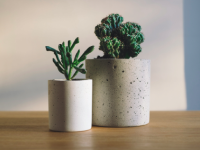
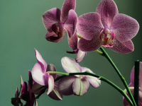
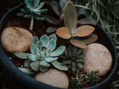

25-60-60")
Цветы в горшке
Цветы в горшке — это живое украшение, которое наполняет дом или офис жизнью, уютом и гармонией. Эти растения не только радуют глаз, но и очищают воздух, создавая благоприятную атмосферу. В Julia's Flowers мы предлагаем широкий выбор комнатных растений: от классических зелёных фикусов и монстер до экзотических орхидей и элегантных антуриумов.
Уход за комнатными растениямиЖивые растения в горшках — это не просто элемент декора, а важная составляющая здоровой среды. Исследования показывают, что наличие комнатных растений помогает уменьшить стресс, повысить концентрацию и улучшить общее самочувствие. Цветы в горшке становятся идеальным спутником как в домашних условиях, так и в рабочих пространствах, добавляя природной эстетики и уюта.
  Наши специалисты помогут вам подобрать растение, которое будет соответствовать вашим условиям: уровень освещения, влажность и температурный режим. Для тенистых помещений мы рекомендуем такие растения, как спатифиллум или сансевиерия, а для солнечных пространств отлично подойдут пальмы, цитрусовые деревья или кактусы. Экзотические орхидеи станут центром внимания в любом интерьере, а антуриумы порадуют своей яркой палитрой цветов.
Мы также предлагаем стильные кашпо и горшки, которые подчеркнут красоту вашего растения. В нашем ассортименте представлены минималистичные дизайны, современные текстуры и классические варианты, подходящие для любого интерьера. Для тех, кто ценит оригинальность, доступны кашпо с необычными формами и узорами, которые превращают цветы в горшке в настоящий арт-объект.
Цветы в горшке — это прекрасный выбор как для подарка, так и для создания собственного зелёного уголка. Такой подарок не завянет через несколько дней, а будет радовать своего владельца на протяжении многих месяцев и даже лет. В Julia's Flowers мы предлагаем как уже оформленные композиции, так и возможность собрать уникальный комплект из растения и кашпо.
Если вы новичок в уходе за растениями, не беспокойтесь — наши эксперты предоставят вам подробные рекомендации по уходу. Мы расскажем, как правильно поливать, удобрять и пересаживать ваши растения, чтобы они радовали вас долгие годы.
Создайте свою зелёную зону в доме или офисе с помощью цветов в горшках от Julia's Flowers. Пусть природа станет ближе, привнося в вашу жизнь спокойствие, комфорт и вдохновение.
Уход за комнатными растениями
Цветы в горшке требуют внимания и заботы, но при правильном уходе они могут долго радовать глаз. Основными факторами, которые влияют на здоровье растений, являются освещенность, полив, температура и влажность воздуха. Для того чтобы ваше растение чувствовало себя комфортно, важно следовать нескольким простым правилам.
- Правильный полив
Каждое растение имеет свои особенности в уходе за поливом. Например, кактусам и суккулентам нужно меньше воды, чем фикусам или филадендронам. Важно помнить, что излишек влаги может привести к гниению корней, поэтому лучше поливать растения по мере подсыхания почвы. Для большинства растений достаточно полива раз в неделю. - Освещение и температура
Разные растения имеют разные предпочтения по освещению. Некоторые растения, такие как папоротники и спатифиллумы, предпочитают полутень, в то время как кактусы и цитрусовые нуждаются в прямом солнечном свете. Помещение, где находится растение, должно поддерживать оптимальную температуру, обычно в пределах 18-25 градусов Цельсия. - Удобрение и пересадка
Регулярное удобрение поможет поддерживать здоровье растений. Для комнатных цветов лучше всего использовать специализированные удобрения, которые стимулируют рост и цветение. Также важно помнить, что каждое растение имеет свой срок пересадки. Перекидывать растения в новые горшки нужно по мере их роста, чтобы корневая система не стала слишком тесной.